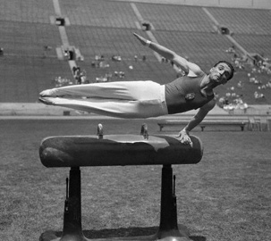

Istvan Pelle (HUN)
1930 World HB Champion
1932 Olympic FX and PH Gold Medalist

Medal Total
Olympic Games: 2
Gold, 2 Silver
World Championships: 1 Gold
Pelle was born on July 26, 1907 in Budapest. He died on April 8, 1986.
Competition Results
1925
HUN Championships: 1st Team
1927
HUN Championships: 1st Team, 1st AA
1928
HUN Championships: 1st Team, 1st AA
Olympic Games: 10th Team, 21st AA
1929
HUN Championships: 1st Team, 1st AA
1930
HUN Championships: 1st Team, 1st AA
World Championships: 1st HB
1931
HUN Championships: 1st Team, 1st AA
1932
HUN Championships: 1st AA, 1st FX, 1st R, 6th V, 2nd PB, 4th PH
Olympic Games: 4th Team, 2nd AA, 1st FX, 1st PH, 2nd
PB
1936
HUN Championships: 1st AA
Olympic Games: 7th Team, 18th AA
This page was created on May 28,
2007.
© Gymn Forum